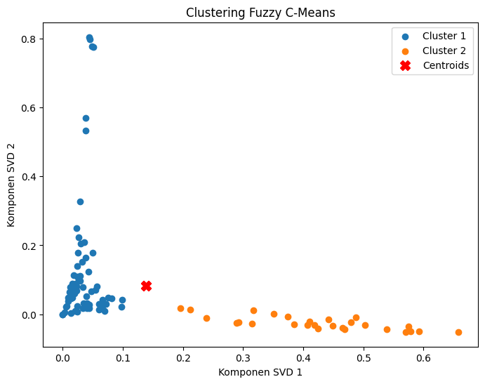

Tugas 7 : Fuzzy C-Means (SVD)#
from google.colab import drive
drive.mount('/content/drive')
Drive already mounted at /content/drive; to attempt to forcibly remount, call drive.mount("/content/drive", force_remount=True).
import pandas as pd
df = pd.read_csv("/content/drive/My Drive/PPW-A/report/Tugas-PPW-A/hasil_preprocesing.csv")
df.head()
| judul | tanggal | isi | kategori | cleansing | case_folding | tokenize | Filtering/stopword removal | |
|---|---|---|---|---|---|---|---|---|
| 0 | Kualifikasi F1 GP Las Vegas: Russell Pole, Ver... | Sabtu, 23 Nov 2024 15:05 WIB | Las Vegas - Pebalap Mercedes George Russell me... | Olahraga | Las Vegas Pebalap Mercedes George Russell mer... | las vegas pebalap mercedes george russell mer... | ['las', 'vegas', 'pebalap', 'mercedes', 'georg... | las vegas pebalap mercedes george russell mera... |
| 1 | Triple Kill Jonatan Chrisite di China Masters:... | Sabtu, 23 Nov 2024 15:04 WIB | Shenzhen - Jonatan Christie sukses menembus pa... | Olahraga | Shenzhen Jonatan Christie sukses menembus par... | shenzhen jonatan christie sukses menembus par... | ['shenzhen', 'jonatan', 'christie', 'sukses', ... | shenzhen jonatan christie sukses menembus part... |
| 2 | China Masters 2024: Singkirkan Shi Yu Qi, Jona... | Sabtu, 23 Nov 2024 14:04 WIB | Jakarta - China Masters 2024 jalani babak semi... | Olahraga | Jakarta China Masters jalani babak semifinal... | jakarta china masters jalani babak semifinal... | ['jakarta', 'china', 'masters', 'jalani', 'bab... | jakarta china masters jalani babak semifinal j... |
| 3 | Tangkal Judol, Menpora Mau Perbanyak Gelar Kej... | Sabtu, 23 Nov 2024 11:50 WIB | Jakarta - Kejuaraan Antarkampung (Tarkam) biki... | Olahraga | Jakarta Kejuaraan Antarkampung Tarkam bikinan... | jakarta kejuaraan antarkampung tarkam bikinan... | ['jakarta', 'kejuaraan', 'antarkampung', 'tark... | jakarta kejuaraan antarkampung tarkam bikinan ... |
| 4 | Vinales Bidik Rekor Ini Bersama Tech3 | Sabtu, 23 Nov 2024 10:50 WIB | Montmelo - Pebalap Tech3 KTM Maverick Vinales ... | Olahraga | Montmelo Pebalap Tech KTM Maverick Vinales op... | montmelo pebalap tech ktm maverick vinales op... | ['montmelo', 'pebalap', 'tech', 'ktm', 'maveri... | montmelo pebalap tech ktm maverick vinales opt... |
from sklearn.feature_extraction.text import TfidfVectorizer
# Menginisialisasi TfidfVectorizer
vectorizer = TfidfVectorizer()
# Menghitung TF-IDF
tfidf_matrix = vectorizer.fit_transform(df['Filtering/stopword removal'])
# Mengubah hasilnya menjadi DataFrame
tfidf_df = pd.DataFrame(tfidf_matrix.toarray(), columns=vectorizer.get_feature_names_out())
tfidf_df.head(10)
| abad | abah | abbas | abdillah | abdul | abiyu | abu | abuabu | academy | acar | ... | yusuf | yuyang | zaman | zat | zero | zhang | zhou | zomato | zona | zu | |
|---|---|---|---|---|---|---|---|---|---|---|---|---|---|---|---|---|---|---|---|---|---|
| 0 | 0.0 | 0.0 | 0.0 | 0.0 | 0.000000 | 0.000000 | 0.0 | 0.0 | 0.0 | 0.0 | ... | 0.0 | 0.0 | 0.0 | 0.0 | 0.000000 | 0.0 | 0.040936 | 0.0 | 0.000000 | 0.0 |
| 1 | 0.0 | 0.0 | 0.0 | 0.0 | 0.000000 | 0.000000 | 0.0 | 0.0 | 0.0 | 0.0 | ... | 0.0 | 0.0 | 0.0 | 0.0 | 0.000000 | 0.0 | 0.000000 | 0.0 | 0.000000 | 0.0 |
| 2 | 0.0 | 0.0 | 0.0 | 0.0 | 0.000000 | 0.000000 | 0.0 | 0.0 | 0.0 | 0.0 | ... | 0.0 | 0.0 | 0.0 | 0.0 | 0.000000 | 0.0 | 0.000000 | 0.0 | 0.000000 | 0.0 |
| 3 | 0.0 | 0.0 | 0.0 | 0.0 | 0.000000 | 0.000000 | 0.0 | 0.0 | 0.0 | 0.0 | ... | 0.0 | 0.0 | 0.0 | 0.0 | 0.000000 | 0.0 | 0.000000 | 0.0 | 0.000000 | 0.0 |
| 4 | 0.0 | 0.0 | 0.0 | 0.0 | 0.000000 | 0.000000 | 0.0 | 0.0 | 0.0 | 0.0 | ... | 0.0 | 0.0 | 0.0 | 0.0 | 0.000000 | 0.0 | 0.000000 | 0.0 | 0.000000 | 0.0 |
| 5 | 0.0 | 0.0 | 0.0 | 0.0 | 0.073511 | 0.110267 | 0.0 | 0.0 | 0.0 | 0.0 | ... | 0.0 | 0.0 | 0.0 | 0.0 | 0.000000 | 0.0 | 0.000000 | 0.0 | 0.000000 | 0.0 |
| 6 | 0.0 | 0.0 | 0.0 | 0.0 | 0.000000 | 0.000000 | 0.0 | 0.0 | 0.0 | 0.0 | ... | 0.0 | 0.0 | 0.0 | 0.0 | 0.035317 | 0.0 | 0.000000 | 0.0 | 0.070633 | 0.0 |
| 7 | 0.0 | 0.0 | 0.0 | 0.0 | 0.000000 | 0.000000 | 0.0 | 0.0 | 0.0 | 0.0 | ... | 0.0 | 0.0 | 0.0 | 0.0 | 0.000000 | 0.0 | 0.000000 | 0.0 | 0.000000 | 0.0 |
| 8 | 0.0 | 0.0 | 0.0 | 0.0 | 0.000000 | 0.000000 | 0.0 | 0.0 | 0.0 | 0.0 | ... | 0.0 | 0.0 | 0.0 | 0.0 | 0.000000 | 0.0 | 0.000000 | 0.0 | 0.000000 | 0.0 |
| 9 | 0.0 | 0.0 | 0.0 | 0.0 | 0.000000 | 0.000000 | 0.0 | 0.0 | 0.0 | 0.0 | ... | 0.0 | 0.0 | 0.0 | 0.0 | 0.000000 | 0.0 | 0.000000 | 0.0 | 0.000000 | 0.0 |
10 rows × 4860 columns
from sklearn.decomposition import TruncatedSVD
svd = TruncatedSVD(n_components=100, random_state=42) # Mulai dengan 100 komponen, bisa dikurangi lagi nanti
tfidf_svd_matrix = svd.fit_transform(tfidf_matrix)
svd_df = pd.DataFrame(tfidf_svd_matrix)
#Transpose matriks hasil SVD
#tfidf_svd_matrix_transposed = tfidf_svd_matrix.T
svd_df.head(100)
#svd_df.shape
| 0 | 1 | 2 | 3 | 4 | 5 | 6 | 7 | 8 | 9 | ... | 90 | 91 | 92 | 93 | 94 | 95 | 96 | 97 | 98 | 99 | |
|---|---|---|---|---|---|---|---|---|---|---|---|---|---|---|---|---|---|---|---|---|---|
| 0 | 0.070208 | 0.008926 | 0.088033 | -0.115512 | 0.014441 | 0.148354 | -0.025158 | 0.316508 | 0.112554 | 0.102976 | ... | 0.016093 | 0.007635 | -0.004728 | 0.006689 | 0.006640 | 0.003235 | 0.001828 | 0.015822 | -0.008979 | 6.149459e-18 |
| 1 | 0.570249 | -0.051053 | -0.148401 | 0.471844 | 0.017531 | 0.184541 | -0.036963 | 0.055997 | 0.018153 | -0.039775 | ... | 0.335511 | -0.047534 | -0.177085 | 0.246708 | 0.115753 | -0.081828 | -0.006074 | 0.005774 | 0.000158 | 1.173649e-17 |
| 2 | 0.424865 | -0.041981 | -0.154413 | 0.504569 | 0.020061 | 0.217146 | -0.017601 | 0.045272 | 0.011096 | 0.156093 | ... | 0.069946 | 0.010022 | 0.128517 | -0.211606 | -0.065295 | 0.142286 | -0.005158 | -0.087636 | 0.047603 | -2.526191e-17 |
| 3 | 0.034535 | 0.031661 | 0.140299 | -0.063677 | 0.009764 | 0.223660 | 0.032508 | -0.112528 | -0.066919 | 0.026695 | ... | 0.001477 | -0.004386 | -0.002670 | 0.002658 | 0.000427 | -0.004828 | 0.004134 | -0.000827 | 0.001713 | 5.584996e-17 |
| 4 | 0.021024 | 0.010335 | 0.067736 | -0.063452 | 0.008971 | 0.110914 | -0.026970 | 0.269987 | 0.090229 | 0.017159 | ... | 0.001723 | -0.000384 | -0.004198 | 0.000248 | -0.000541 | 0.001468 | 0.000939 | -0.001166 | 0.000963 | 7.166576e-17 |
| ... | ... | ... | ... | ... | ... | ... | ... | ... | ... | ... | ... | ... | ... | ... | ... | ... | ... | ... | ... | ... | ... |
| 95 | 0.038224 | 0.164370 | 0.399131 | 0.182528 | -0.009864 | -0.192159 | -0.236833 | 0.098721 | -0.305893 | 0.054225 | ... | -0.016798 | 0.004503 | -0.012641 | 0.009208 | -0.002801 | -0.002120 | -0.010426 | -0.004569 | -0.001163 | -2.295798e-17 |
| 96 | 0.015075 | 0.063238 | 0.142135 | 0.040664 | -0.001388 | -0.030946 | -0.129535 | -0.004457 | 0.031247 | 0.039996 | ... | -0.003599 | -0.000597 | 0.006542 | 0.001820 | -0.000377 | 0.001227 | 0.001100 | -0.001393 | -0.005262 | -4.621412e-17 |
| 97 | 0.013072 | 0.077869 | 0.109487 | 0.044468 | -0.002377 | -0.047859 | -0.112561 | -0.018377 | 0.055896 | 0.017615 | ... | -0.003365 | -0.013751 | -0.004471 | 0.000190 | 0.000667 | -0.000168 | 0.006618 | -0.003897 | -0.004075 | 3.186877e-17 |
| 98 | 0.007268 | 0.023555 | 0.050663 | 0.004965 | 0.000822 | 0.008869 | -0.015311 | 0.042622 | 0.023767 | 0.014630 | ... | 0.003610 | -0.006590 | 0.022805 | 0.012455 | -0.000208 | 0.000190 | -0.000897 | 0.002226 | 0.003883 | 2.081668e-17 |
| 99 | 0.009692 | 0.044040 | 0.111656 | 0.055594 | -0.002489 | -0.047263 | 0.011154 | 0.036953 | -0.061006 | 0.004695 | ... | 0.000073 | 0.003620 | 0.002435 | 0.006096 | 0.001052 | -0.001118 | -0.003213 | 0.003857 | 0.001882 | -5.789640e-17 |
100 rows × 100 columns
!pip install scikit-fuzzy
Requirement already satisfied: scikit-fuzzy in /usr/local/lib/python3.10/dist-packages (0.5.0)
import numpy as np
import skfuzzy as fuzz
import matplotlib.pyplot as plt
# Transpos matriks hasil SVD untuk Fuzzy C-Means
svd_normalized = svd_df.to_numpy().T
# Menentukan jumlah kluster
n_clusters = 2 # Untuk kategori Makanan dan Olahraga
# Menjalankan Fuzzy C-Means
cntr, u, u0, d, jm, p, fpc = fuzz.cluster.cmeans(
svd_normalized, n_clusters, 2, error=0.005, maxiter=1000, init=None)
# Prediksi hasil klustering
fcm_labels = np.argmax(u, axis=0)
svd_df['cluster'] = fcm_labels
# Visualisasi
plt.figure(figsize=(8, 6))
for cluster in range(n_clusters):
# Plotk data berdasarkan label kluster
plt.scatter(
svd_df.loc[svd_df['cluster'] == cluster, 0],
svd_df.loc[svd_df['cluster'] == cluster, 1],
label=f'Cluster {cluster + 1}'
)
# Plot centroid
plt.scatter(cntr[:, 0], cntr[:, 1], c='red', marker='X', s=100, label='Centroids')
# Tambahkan keterangan dan label sumbu
plt.xlabel('Komponen SVD 1')
plt.ylabel('Komponen SVD 2')
plt.title('Clustering Fuzzy C-Means')
plt.legend()
plt.show()

# Menampilkan isi kluster 1
cluster_1 = svd_df[svd_df['cluster'] == 0]
print("Isi Cluster 1:")
print(cluster_1)
# Menampilkan isi kluster 2
cluster_2 = svd_df[svd_df['cluster'] == 1]
print("\nIsi Cluster 2:")
print(cluster_2)
Isi Cluster 1:
0 1 2 3 4 5 6 \
0 0.070208 0.008926 0.088033 -0.115512 0.014441 0.148354 -0.025158
3 0.034535 0.031661 0.140299 -0.063677 0.009764 0.223660 0.032508
4 0.021024 0.010335 0.067736 -0.063452 0.008971 0.110914 -0.026970
5 0.065943 0.024497 0.123437 -0.096275 0.010080 0.245215 0.016094
6 0.040535 0.031907 0.084158 -0.022568 0.004535 0.097628 0.020756
.. ... ... ... ... ... ... ...
95 0.038224 0.164370 0.399131 0.182528 -0.009864 -0.192159 -0.236833
96 0.015075 0.063238 0.142135 0.040664 -0.001388 -0.030946 -0.129535
97 0.013072 0.077869 0.109487 0.044468 -0.002377 -0.047859 -0.112561
98 0.007268 0.023555 0.050663 0.004965 0.000822 0.008869 -0.015311
99 0.009692 0.044040 0.111656 0.055594 -0.002489 -0.047263 0.011154
7 8 9 ... 91 92 93 94 \
0 0.316508 0.112554 0.102976 ... 0.007635 -0.004728 0.006689 0.006640
3 -0.112528 -0.066919 0.026695 ... -0.004386 -0.002670 0.002658 0.000427
4 0.269987 0.090229 0.017159 ... -0.000384 -0.004198 0.000248 -0.000541
5 -0.161821 -0.075389 0.030535 ... 0.003661 0.002646 -0.004659 -0.003235
6 -0.045959 -0.017865 0.027693 ... -0.005147 0.003784 -0.012952 -0.003648
.. ... ... ... ... ... ... ... ...
95 0.098721 -0.305893 0.054225 ... 0.004503 -0.012641 0.009208 -0.002801
96 -0.004457 0.031247 0.039996 ... -0.000597 0.006542 0.001820 -0.000377
97 -0.018377 0.055896 0.017615 ... -0.013751 -0.004471 0.000190 0.000667
98 0.042622 0.023767 0.014630 ... -0.006590 0.022805 0.012455 -0.000208
99 0.036953 -0.061006 0.004695 ... 0.003620 0.002435 0.006096 0.001052
95 96 97 98 99 cluster
0 0.003235 0.001828 0.015822 -0.008979 6.149459e-18 0
3 -0.004828 0.004134 -0.000827 0.001713 5.584996e-17 0
4 0.001468 0.000939 -0.001166 0.000963 7.166576e-17 0
5 -0.002542 0.002952 -0.001229 0.003683 -9.730714e-18 0
6 0.004964 0.002530 0.004973 -0.002509 -3.130634e-17 0
.. ... ... ... ... ... ...
95 -0.002120 -0.010426 -0.004569 -0.001163 -2.295798e-17 0
96 0.001227 0.001100 -0.001393 -0.005262 -4.621412e-17 0
97 -0.000168 0.006618 -0.003897 -0.004075 3.186877e-17 0
98 0.000190 -0.000897 0.002226 0.003883 2.081668e-17 0
99 -0.001118 -0.003213 0.003857 0.001882 -5.789640e-17 0
[73 rows x 101 columns]
Isi Cluster 2:
0 1 2 3 4 5 6 \
1 0.570249 -0.051053 -0.148401 0.471844 0.017531 0.184541 -0.036963
2 0.424865 -0.041981 -0.154413 0.504569 0.020061 0.217146 -0.017601
8 0.539425 -0.043612 -0.095226 0.351073 0.014363 0.170731 -0.016658
9 0.292549 -0.023520 -0.004651 -0.115281 -0.008572 -0.117096 0.024660
10 0.385253 -0.029409 -0.008374 -0.244228 -0.017013 -0.242564 0.054362
11 0.468429 -0.043370 -0.112650 0.294518 0.009673 0.083795 -0.011766
13 0.374019 -0.007785 0.070958 -0.158709 -0.004409 -0.025069 -0.052548
14 0.212361 0.013190 0.140142 -0.181255 0.006982 0.207000 0.069808
15 0.407274 -0.031002 -0.006358 -0.161283 -0.010923 -0.146002 0.001177
23 0.195745 0.017138 0.153521 -0.203608 0.008997 0.245191 0.063933
24 0.418644 -0.031950 0.011887 -0.226173 -0.011338 -0.127998 0.049376
25 0.502874 -0.030692 0.014345 -0.332611 -0.019298 -0.266188 0.061395
26 0.479817 -0.024118 -0.060841 0.234416 0.009276 0.092689 -0.048553
27 0.350941 0.001845 0.076034 -0.172436 -0.006553 -0.071616 -0.057355
32 0.441988 -0.015557 0.049307 -0.085984 -0.002126 -0.007918 -0.036810
34 0.575446 -0.036235 0.023110 -0.288864 -0.014697 -0.177510 0.021183
35 0.465497 -0.039710 -0.133997 0.334293 0.010918 0.101674 -0.003499
36 0.657992 -0.051194 -0.050013 -0.077329 -0.006475 -0.081674 0.045482
37 0.410362 -0.021355 -0.027852 0.108186 0.005015 0.065004 -0.026738
38 0.578198 -0.049859 -0.118459 0.258865 0.009210 0.101635 0.011936
39 0.592904 -0.050640 -0.088080 0.098208 0.001186 0.011570 0.025931
40 0.316923 0.010486 0.088774 -0.075364 0.000933 0.045175 -0.057991
42 0.314969 -0.026334 -0.006484 -0.185219 -0.010922 -0.150165 0.041141
43 0.289029 -0.025724 -0.011033 -0.233224 -0.015823 -0.227385 0.051351
45 0.487600 -0.008687 0.068745 -0.198135 -0.007814 -0.084396 -0.048082
46 0.238587 -0.012009 0.015022 -0.119226 -0.005917 -0.088919 -0.011135
48 0.449235 -0.033961 -0.007807 -0.200745 -0.012853 -0.178221 -0.003392
7 8 9 ... 91 92 93 94 \
1 0.055997 0.018153 -0.039775 ... -0.047534 -0.177085 0.246708 0.115753
2 0.045272 0.011096 0.156093 ... 0.010022 0.128517 -0.211606 -0.065295
8 -0.008703 -0.008603 -0.006359 ... 0.006887 -0.066735 0.114392 -0.042646
9 -0.009938 -0.009856 0.094266 ... -0.002743 0.040027 -0.050326 0.127093
10 0.008396 0.021746 0.409243 ... 0.014558 0.010072 0.021696 0.197061
11 0.076991 0.021215 0.080970 ... 0.038688 0.100319 -0.127041 -0.042410
13 -0.016188 -0.024573 -0.513958 ... 0.007665 -0.014826 0.020240 -0.039710
14 -0.116633 -0.072107 0.152764 ... -0.011679 -0.006060 -0.012169 0.066439
15 0.018207 0.021329 -0.226998 ... -0.006874 -0.014637 -0.011115 -0.001297
23 -0.123426 -0.068537 0.159585 ... 0.004803 -0.004578 0.024195 -0.038402
24 -0.068599 -0.023946 0.135073 ... 0.000156 0.036631 -0.042484 -0.040954
25 -0.000938 0.018951 0.410688 ... -0.017780 -0.001312 -0.030555 -0.241369
26 0.070334 0.008651 -0.162507 ... -0.001434 0.103937 -0.179925 -0.037636
27 0.038612 0.007826 -0.403957 ... 0.003045 -0.001108 0.027603 -0.049091
32 -0.005050 -0.014983 -0.232786 ... 0.015932 0.040580 -0.051989 0.054774
34 -0.037153 -0.009245 -0.101486 ... -0.003661 0.003963 -0.017191 0.266922
35 0.046257 0.010551 0.101802 ... -0.006795 -0.085450 0.142410 0.056798
36 -0.076446 -0.019324 0.184755 ... -0.011981 -0.119792 0.153201 -0.273535
37 -0.012202 -0.004553 -0.153998 ... -0.002393 -0.055916 0.083886 -0.001125
38 -0.057452 -0.004945 0.183407 ... 0.010201 0.083600 -0.114908 0.009733
39 -0.091687 -0.015127 0.138612 ... 0.008320 0.051377 -0.055876 0.117910
40 -0.006575 -0.023207 -0.380777 ... -0.017228 0.013036 0.002500 -0.014619
42 -0.001750 0.002648 0.179282 ... -0.003950 -0.026703 0.034109 0.071245
43 0.009563 0.015215 0.357294 ... 0.000782 -0.016977 0.020265 0.008501
45 0.039429 0.019294 -0.389346 ... 0.011665 0.030679 -0.072479 0.016329
46 0.054029 0.015447 -0.048726 ... 0.007767 -0.004236 -0.005450 0.023671
48 0.036735 0.018529 -0.227913 ... 0.002740 0.017253 0.014315 -0.133995
95 96 97 98 99 cluster
1 -0.081828 -0.006074 0.005774 0.000158 1.173649e-17 1
2 0.142286 -0.005158 -0.087636 0.047603 -2.526191e-17 1
8 -0.024233 0.004055 0.004370 -0.003755 1.314595e-18 1
9 -0.095291 -0.003611 -0.029489 0.019150 -4.523834e-17 1
10 0.195826 0.002430 0.040719 -0.020526 -1.107377e-16 1
11 0.019370 0.004698 0.009896 -0.007289 -1.029992e-18 1
13 0.000529 0.002020 -0.006755 0.004531 -1.111849e-16 1
14 -0.001378 -0.002576 0.000744 0.001576 -7.087972e-18 1
15 -0.027454 -0.000166 0.007688 -0.004396 -3.512815e-17 1
23 0.002331 0.004397 -0.004602 0.001930 -3.469447e-18 1
24 -0.042261 0.005055 0.014167 -0.010680 1.276648e-17 1
25 -0.263380 -0.003577 -0.065272 0.034469 -5.068645e-17 1
26 0.080366 -0.000417 0.004789 -0.004368 2.710505e-18 1
27 0.006745 0.003842 0.004589 -0.001381 -1.981379e-17 1
32 -0.078449 -0.000329 0.006492 -0.002243 5.219078e-17 1
34 0.062275 -0.000910 0.033739 -0.020620 1.530080e-17 1
35 -0.099769 -0.005258 0.018838 -0.007264 -2.406929e-17 1
36 0.268895 0.004985 0.043383 -0.028499 9.215718e-19 1
37 0.031312 -0.014410 -0.100587 0.061203 -3.422013e-17 1
38 -0.133104 0.034557 0.273383 -0.160484 -2.444876e-17 1
39 -0.044825 -0.029139 -0.247358 0.146733 2.596664e-17 1
40 0.018203 -0.004194 0.027172 -0.015019 6.147426e-17 1
42 0.037247 -0.002443 0.005109 -0.001469 4.208060e-18 1
43 0.022963 -0.000557 0.015011 -0.008015 1.655102e-16 1
45 0.005736 0.010011 0.040998 -0.025384 5.187907e-17 1
46 -0.009848 0.000186 -0.023935 0.013995 -2.307995e-17 1
48 -0.007275 -0.003253 -0.030853 0.019415 3.659182e-17 1
[27 rows x 101 columns]
df['cluster'] = svd_df['cluster']
# Tampilkan distribusi kategori dalam kluster 1
print("Distribusi Kategori dalam Cluster 1:")
print(df[df['cluster'] == 0]['kategori'].value_counts())
# Tampilkan distribusi kategori dalam kluster 2
print("\nDistribusi Kategori dalam Cluster 2:")
print(df[df['cluster'] == 1]['kategori'].value_counts())
Distribusi Kategori dalam Cluster 1:
kategori
Makanan 50
Olahraga 23
Name: count, dtype: int64
Distribusi Kategori dalam Cluster 2:
kategori
Olahraga 27
Name: count, dtype: int64